Aparece nos jogos:
Donkey Kong (1981),
Donkey Kong Country (1994),
Donkey Kong Country 2: Diddy's Kong Quest (1995),
Donkey Kong Country 3: Dixie Kong's Double Trouble! (1996) e
Donkey Kong 64 (1999)
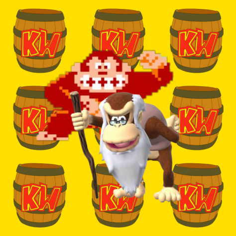
Iniciando com Cranky Kong, ao examinarmos a trama dos jogos, percebemos que ele é o Kong mais antigo que conhecemos e um dos mais renomados.
Assumindo o papel de avô de Donkey, Cranky nos oferece conselhos e repreensões ao longo dos dois primeiros títulos da série Country.
Além disso, o personagem é nada menos que o gorila do jogo original Donkey Kong de 1981, porém, seu nome foi modificado posteriormente após o lançamento de Donkey Kong Country.

Aparece nos jogos:
Donkey Kong Jr. (1982)
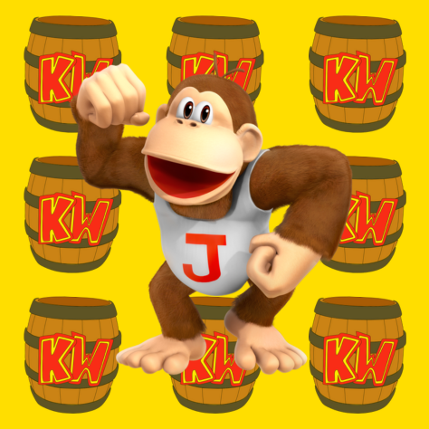
A continuação do jogo de 1981 foi Donkey Kong Jr, que apresentou o filho do gorila Cranky como o personagem principal.
Neste jogo, assumimos o controle de um gorila bebê que se esforça para resgatar seu pai de uma prisão.
Posteriormente, foi revelado que esse mesmo personagem se tornaria o pai do gorila mais icônico do mundo dos videogames, o Donkey Kong.

Aparece nos jogos:
Donkey Kong (1981),
Donkey Kong Jr. (1982),
Donkey Kong 3 (1983),
Donkey Kong (Game Boy, 1994),
Donkey Kong Country (1994),
Donkey Kong Land (1995),
Donkey Kong Country 2: Diddy's Kong Quest (1995),
Donkey Kong Land 2 (1996),
Donkey Kong Country 3: Dixie Kong's Double Trouble! (1996),
Donkey Kong Land III (1997),
Donkey Kong 64 (1999),
Donkey Kong Country Returns (2010) e
Donkey Kong Country: Tropical Freeze (2014)
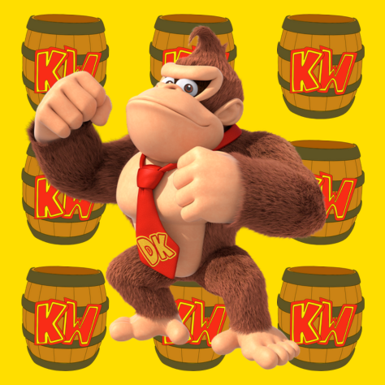
Agora chegamos a Donkey Kong Country, desenvolvido pela saudosa RARE e lançado no SNES em 1994.
É neste jogo que somos apresentados a um gorila com uma gravata, repleto de personalidade, o lendário Donkey Kong.
Sua popularidade foi imediata, conferindo-lhe reconhecimento e levando-o a aparecer em numerosos outros títulos da Nintendo até os dias atuais.

Aparece nos jogos:
Donkey Kong Country (1994),
Donkey Kong Country 2: Diddy's Kong Quest (1995),
Donkey Kong Country 3: Dixie Kong's Double Trouble! (1996) e
Donkey Kong 64 (1999)
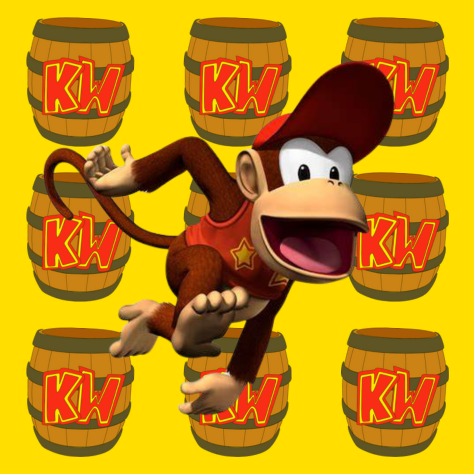
Em Donkey Kong Country, também encontramos um adorável e ágil macaquinho chamado Diddy Kong,
que rapidamente se tornou um dos personagens mais carismáticos e memoráveis da série. Sua popularidade foi tão grande que ele em breve se viu no papel principal,
liderando o jogo Donkey Kong Country 2: Diddy's Kong Quest.

Aparece nos jogos:
Donkey Kong Country 2: Diddy's Kong Quest (1995) e
Donkey Kong Country 3: Dixie Kong's Double Trouble! (1996)
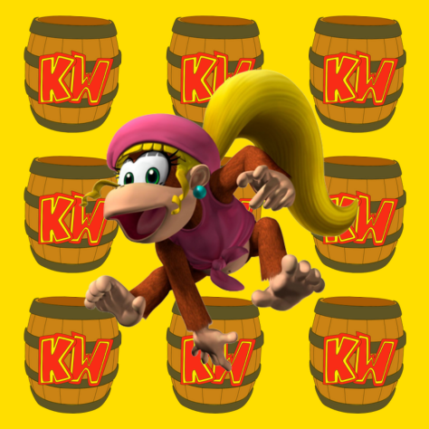
Em Donkey Kong Country 2: Diddy's Kong Quest, também somos apresentados a Dixie, a namorada de Diddy.
Assim como Diddy, ela conquistou o coração do público e assegurou sua presença em títulos subsequentes da série,
desempenhando o papel principal no terceiro jogo da série Country.

Aparece nos jogos:
Donkey Kong Country (1994),
Donkey Kong Country 2: Diddy's Kong Quest (1995),
Donkey Kong Country 3: Dixie Kong's Double Trouble! (1996) e
Donkey Kong 64 (1999)
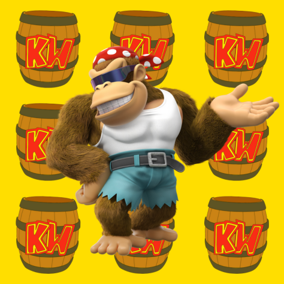
Um amante do surfe, piloto habilidoso, e mecânico talentoso, Funky é também um grande companheiro de Donkey Kong.
Nos dois primeiros jogos da série Country, Funky nos leva em emocionantes voos pelo mapa em seu avião. No terceiro jogo, ele se aventura como mecânico e em Donkey Kong 64,
contribui para a família Kong fabricando armas essenciais.

Aparece nos jogos:
Donkey Kong Country (1994) e
Donkey Kong 64 (1999)
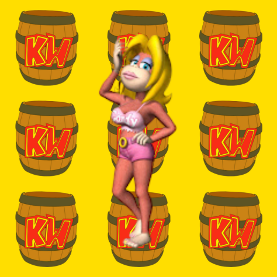
A encantadora gorila que fez sua estreia em Donkey Kong Country é a namorada de DK.
Ela estava presente em todos os mapas com sua cabana, proporcionando um ponto de salvamento no jogo. Candy também desempenhou um papel importante em Donkey Kong 64,
auxiliando o resto da família Kong fornecendo melancias para aumentar a energia (HP) e instrumentos que foram cruciais na batalha contra os Kremlings.

Aparece nos jogos:
Donkey Kong Country (1994),
Donkey Kong Country 2: Diddy's Kong Quest (1995),
Donkey Kong Country 3: Dixie Kong's Double Trouble! (1996) e
Donkey Kong 64 (1999)

Agora, adentramos em Donkey Kong Country 3, onde a protagonista é Dixie, acompanhada por um bebê forte, porém um tanto chorão, chamado Kiddy Kong.
Embora seja um personagem intrigante, ele não foi tão bem aceito pelos fãs na época, uma vez que esperavam que o jogo seguinte após o Country 2 tivesse o gorila que dá nome
à franquia como protagonista, algo que acabou não ocorrendo.

Aparece nos jogos:
Donkey Kong Country 2: Diddy's Kong Quest (1995),
Donkey Kong Country 3: Dixie Kong's Double Trouble! (1996) e
Donkey Kong 64 (1999)
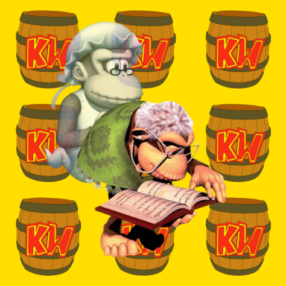
Educadora, avó de Donkey e esposa do velho Cranky, Wrinkly fez sua primeira aparição em Donkey Kong Country 2,
onde atuava como diretora da Kong Kollege. Sua contribuição significativa incluía auxiliar os macacos a salvar o progresso no jogo.
Além disso, ela também está presente em Donkey Kong Country 3 e Donkey Kong 64, mas neste último título, sua participação é somente na forma de um espírito,
sugerindo que ela veio a falecer em algum ponto da narrativa.

Aparece nos jogos:
Donkey Kong 64 (1999)
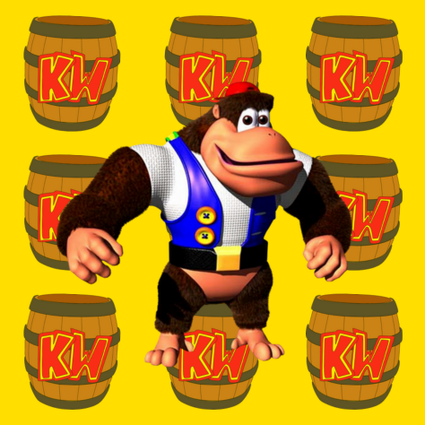
Primo de Dixie e Tinny, e irmão mais velho de Kiddy, Chunk faz sua primeira aparição em Donkey Kong 64 como um gorila notavelmente robusto.
No entanto, por mais que possua uma imensa força, ocasionalmente ele demonstra alguma timidez, particularmente quando se trata de lidar com alturas elevadas.

Aparece nos jogos:
Donkey Kong 64 (1999)
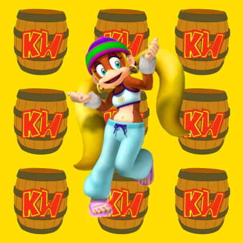
Em Donkey Kong 64, também somos apresentados a Tiny, a irmã de Dixie Kong. No jogo, ela possui uma habilidade única:
a capacidade de encolher, o que lhe permite acessar espaços estreitos e diminutos que outros Kongs não conseguem alcançar.
Essa característica distinta a torna uma adição valiosa à equipe.

Aparece nos jogos:
Donkey Kong 64 (1999)
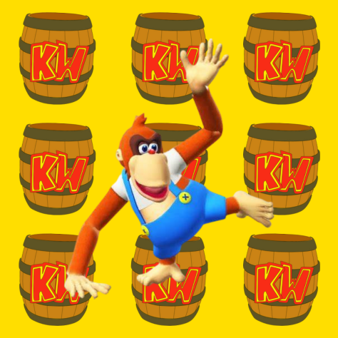
Lanky é um primo dos Kong que se assemelha a um orangotango excêntrico. Sabemos relativamente pouco sobre ele: em Donkey Kong 64,
esse gorila peculiar empunha uma arma bastante única que dispara uvas contra seus inimigos. Sua natureza incomum o torna um personagem intrigante no universo dos jogos Donkey Kong.